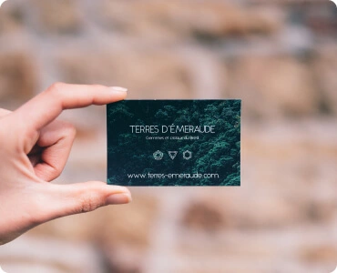
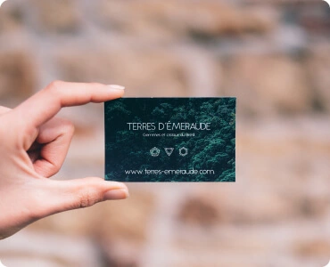

Homework lesson 9
Контентні зображення
Контентні зображення - зображення, які і є контентом сайту У більшості випадків це растрові зображення (фотографії) (JPG/PNG -> WEBP)
Усі контентні зображення виводяться тегом IMG


 

Іконки
Іконки - невеликі прості зображення, які підсилюють ефект тексту, або самостійно несуть певну інформацію.
У більшості випадків це векторні зображення. (SVG)
Іконки можуть інтегруватись як тегом IMG так і через CSS (background та інші)
Елементи дизайну
Елементи дизайну - веркторні, або растрові зображення (можливо з прозорістю) які є частиною дизайну сайту.
Можуть бути як векторні так і растрові (SVG, JPG/PNG -> WEBP)
Елементи дизайну, частіше всього, нтегруються через CSS (background та інші)